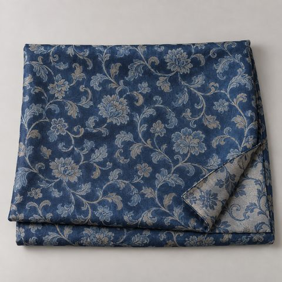
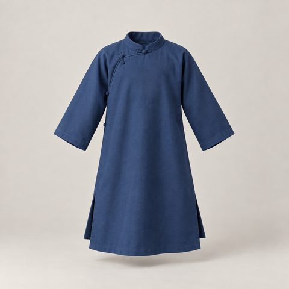

解决什么
一件定制单要走一百多天，每一环都可能出岔子
01
列表清空了，钱其实没退成
AI 判过、人确认过、事情办完了，在待处理列表里都叫「已销账」。
现在：分开记录，办结必须有系统回执
02
答应了，却做不出来或赶不上婚期
面料和工艺配不配、哪道工序卡工期，这些知识在老师傅脑子里。
现在：当场给出可行性、报价、工期、最晚下单日
03
同一位客户，三家店三份档案
没有地方认人，也没有地方安全地合并。等级、积分、人数都算错。
现在：统一档案，合并只做关联，可以撤回
核心功能
四件每天都在发生的事
研判队列：AI 出草稿，人签字
店长 · 售后 · 财务 · 总部运营
- 痛点
- 「AI 判了」「人认了」「办完了」混成一个状态
- 怎么解决
- AI 给根因、建议和证据；人采纳、改判或升级；凭回执办结
- 进与出
- 系统扫出的事项 → 可追溯的结论和回执
方案配置：当场回答能不能做
顾问 · 店内接待定制客户
- 痛点
- 相容关系和工期卡点靠经验，答应了才发现做不出
- 怎么解决
- 按工艺相容规则和产能排期，当场计算
- 进与出
- 客户的选择和交付日期 → 可行性、报价、工期、最晚下单日
着装人管理：尺码跟着穿的人走
顾问 · 妈妈给女儿定制
- 痛点
- 尺码记在付款人名下，孩子长高了没人知道该重新量
- 怎么解决
- 按穿的人管尺码和复量提醒，儿童带成长身高预测
- 进与出
- 量体记录 → 尺码推荐、复量提醒
预估成效
三家门店加总部，一年预计带来约 53 万元收益
这是按下面的口径测算出来的预估，不是实测结果。产品还没有在真实门店运行，换成你自己的数，结果会按比例变化。
约 400 小时／月
省下的人工
相当于 2.3 个全职岗位
约 53 万元／年
预估总收益
省人工、少损失、多成交三层相加
约 6 万元／年
运行成本
模型调用费用加服务器与维护
约 8 个月
收回搭建投入
按一次性搭建投入 30 万元测算
收益来源
怎么算
一年
把握
省下的人工查数、研判、报告、出方案、记档
每月约 400 小时，按每小时 50 元的综合用人成本
约 24 万元
较大：只取决于用量和耗时
避免的损失答应了做不出来、赶不上用件日期、退错款
每家店每月提前拦下 1 单做不成或赶不上的定制单，每单约 4,000 元；全公司每月少 1 笔约 1,500 元的退款差错
约 16 万元
中等：取决于现在出错有多频繁
多成交带来的毛利当场告诉顾客能不能做、多少钱、多久
每家店每月 60 个定制方案，成交率提高 3 个百分点，每单约 4,000 元，毛利率按 50%
约 13 万元
较小：成交率的变化要靠试点验证
省人工的环节
现在的做法
用了之后
每月的量
每月省下
对话助手查工期、库存、客户档案、业绩
在后台翻几个页面，每次 4 分钟
问一句，看带出处的答复，每次 1 分钟
2,340 次，每家店每天 30 次
117 小时
方案配置能不能做、用料、工期、报价
顾问手工核对并找人确认，每个方案 40 分钟
系统当场给结论，顾问核对，每个 10 分钟
180 个，每家店 60 个
90 小时
研判队列退款异常、售后判责、档案合并等
人从头查订单、流水、记录，每件 15 分钟
看 AI 草稿和证据后复核，每件 5 分钟
450 件，每家店每天约 5 件
75 小时
接待记录整理接待后把录音整理成档案
顾问凭记忆手写，每次 10 分钟
系统整理成稿，顾问确认，每次 3 分钟
624 次，每家店每天 8 次
73 小时
经营报告日报、周报、月报
手工拉数、填表：日报 15 分钟，周报 2 小时，月报 4 小时
系统生成，人核对确认：日报 5 分钟，周报 30 分钟，月报 1 小时
三家店各一套，加总部汇总
约 49 小时
只认最有把握的那一层，账也算得过来
如果只算省下的人工，一年约 24 万元，扣掉约 6 万元运行成本后是 18 万元，按 30 万元搭建投入算，约 20 个月收回。加上后两层，缩短到约 8 个月。门店越多，搭建投入摊得越薄。
没有算进去的
- 成本一侧：员工学习使用的时间；每份 AI 草稿都要人复核，退款多一步财务登记，这是有意的设计。
- 收益一侧：新顾问靠面料学堂更快上手、差评和超时减少带来的复购，这两项没有估数。
30 万元搭建投入的构成
一次性投入，按工作量测算。最大的两块是把业务接进来的工具开发，和把规矩定清楚的口径梳理，合计占一半。
业务服务与工具开发8 个业务服务、110 个工具，对接业务库
30%9 万元需求梳理与业务口径走通定制单全程，定下 127 条规则和 59 个口径模块
20%6 万元智能体治理技能、守卫、四层闸和按岗位的权限
15%4.5 万元评测与自动检查评测题集和 438 项自动检查
15%4.5 万元页面与后台工作台各页面、管理后台、AI 管理后台
10%3 万元部署、数据接入与培训上线部署、历史数据导入、员工培训
10%3 万元测算口径：三家门店加总部，每月营业 26 天。运行成本按模型调用每月约 1,900 元、服务器与维护每月约 3,000 元估算；一次性搭建投入按 30 万元计。要把预估变成实测，需要在试点时记录各环节用前用后的耗时、草稿被改判的比例、出错的次数和方案成交率。看算法说明 →
有什么不同
它不是聊天机器人
聊天机器人
澜绣云裳
数字从哪来
模型自己的记忆
必须从业务库里查，查不到就说查不到
规矩谁定
模型当场组织
业务口径提前定好并只写一处，AI 只负责取数
能不能改数据
不能，或者不受约束
能，但只限登记过的操作，先预演，再由人签字
怎么做出来的
同一件事，三种做法各做一遍
不预设哪种最好。用同一批工单并排比，弄清楚什么事该用哪一种。
第一代
直接调用模型
自己手写循环：模型说要查什么，程序去查，把结果交回去，直到得出答案。
能答开放问题，每条约 12 秒
第二代
固定流程
步骤由人事先写死，大部分环节是纯规则。模型只负责把结论写成一段话。
步骤能列全的事，每条约 3 秒
第三代
智能体
模型自己规划步骤。我们负责治理：发哪些工具、哪些动作要拦、答完怎么检查。
步骤列不全的事，每条约 28 秒
耗时来自 2026 年 10 月的一次实测：同一模型、6 条工单、连跑四轮，样本很小，只代表工单研判这一件事。看完整对比 →
谁在用
七种岗位，各问各的事
顾问
这套配置能做吗，多少钱，多久？
店长
这个月店里怎么样？这单该派给谁？
工匠
我手上有哪些活？哪件要拖了？
版师
这位客户要不要改版？裁片用料多少？
财务
这笔退款卡在哪？这单为什么对不上？
售后
这次返修该谁担责？
总部运营
看各岗位能做什么 →
哪些客户在流失？活动效果如何？
安全与可控
AI 做一半，另一半必须由人签字
每一步留痕、能撤、能查
- 动钱两人经手：退款由店长复核、财务办结
- 办结要回执：系统核对那张单确实已退，才算办完
- 一笔流水只能登记一次：同一个渠道流水号只能对应一笔退款
- 合并可撤回：重复档案只做关联，数据不搬动
- 客户信息打码：手机号只显示后四位，导出有记录
明确不做的事
- 不自动给客户发短信、微信或打电话，对外动作由人来按
- 不替业务定标准，门槛和口径由人决定
- 证据不足时不硬下结论
- 不执行付款和退款，只查状态、找原因

